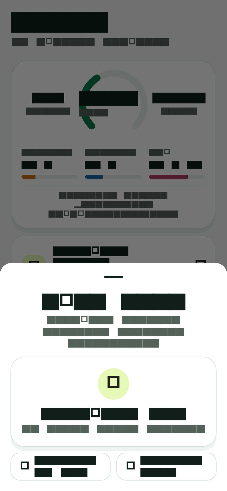
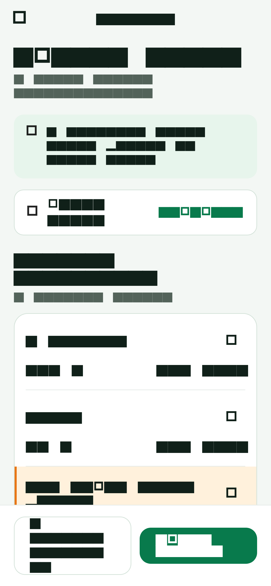
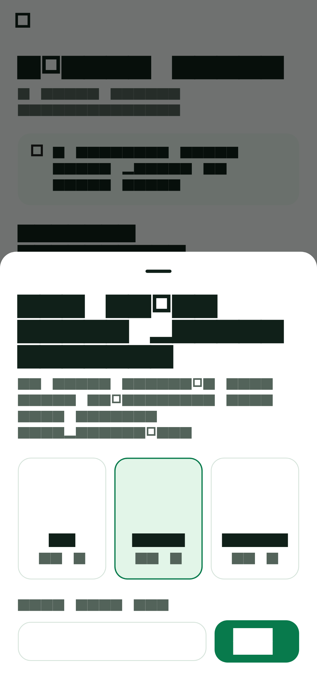
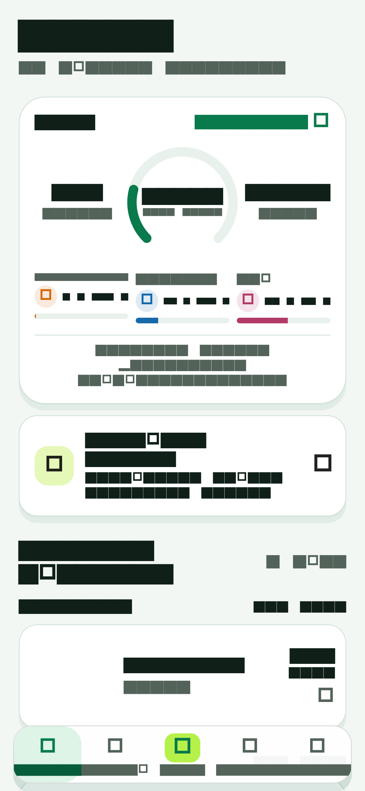
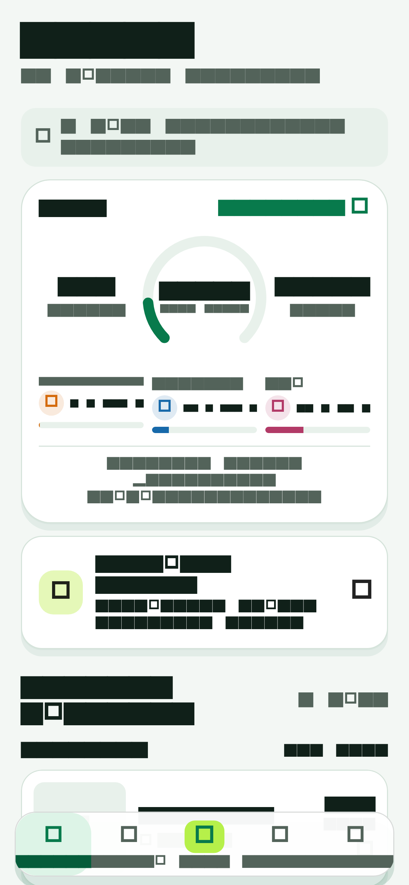
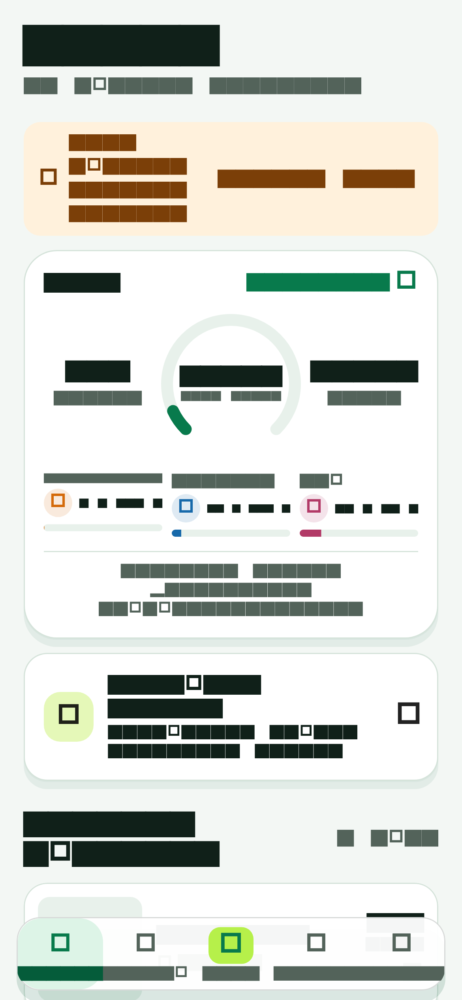

Loom sunumu · yaklaşık 8 dakika
Model yorumlar.
Katalog karar verir.
Flutter uygulaması, TypeScript Edge Functions, pgvector'lü Postgres ve yapay zekâ kalitesi ile maliyeti izleyen bir yönetim konsolu. EatBetter vaka çalışması için doğruluk öncelikli bir öğün kaydedici.
Bir öğün nasıl veriye dönüşüyor
candidateId alanı, aramanın az önce bulduğu kimliklerden oluşan bir enum. Besin değerleri ayrı kanaldan, commit işlemi içinde foods tablosundan yeniden okunur.Canlı demo




Eşleşme yoksa: açık bir NO_MATCH. Önce elle katalog araması; hiçbir şey uymazsa sunucu etiketli ve sınır kontrollü bir tahmin üretir — istemci hâlâ besin değeri gönderemez.
Fotoğrafın ayrıcalığı yok: kameradan kullanıcıya özel gizli depolamaya, oradan metinle aynı temellendirme yoluna.
Simülatöre geç
Uydurma besin değeri neden yapısal olarak imkânsız
candidateId, aramanın döndürdüğü kimliklerden oluşan bir enum.foods tablosundan okunur; sahte makro gönderen istemci geçen bir testle reddedilir.Ölçüm
60/60 · F1 1.00 · MAPE 0
Ayrıştırma yolunu üç gıdalık bir fikstür kataloğuna karşı çalıştırır: ağ yok, arama yok, model yok. Mükemmel skor tek bir şey söyler — Türkçe ayrıştırmada regresyon yok. Ürün doğruluğu hakkında hiçbir şey söylemez.
20 çift dilli vaka, deploy edilmiş fonksiyondan geçer; vaka başına gecikme, token, önbellek isabeti ve maliyet raporlanır.
Her koşu eval_runs / eval_cases tablolarına yazılır; sonuçlar terminalde kayıp gitmek yerine konsolda sonradan incelenebilir.
Bu ayrımı yapmak, elimdeki en iyi rakamı öne çıkarmaktan daha önemli. Mükemmel bir skoru ürün doğruluğu diye sunmak, ölçtüğüm şeyi anlamadığım anlamına gelirdi.
İlk temiz canlı koşu · 20 vaka
Okunacak şey tek bir not değil, şekil: yemeğin ne olduğunu bulmak görece iyi çalışıyor, ne kadar olduğunu kestirmek çalışmıyor. Yani kullanıcıyı yoran şey yanlış yemek değil, yanlış gram olurdu — ve bu, EatBetter kullanıcılarının kendi yorumlarında anlattığı şikâyetle birebir örtüşüyor.
Sorulmadan söylenecek uyarı: gold etiketlerin bir kısmı, 60.000'lik üretim kataloğu yüklenmeden önce üç gıdalık seed kataloğuna göre yazılmıştı. Kimlik hatalarının bir bölümü yanlış cevap değil, bayat etiket. Geçme oranını herhangi bir yerde alıntılamadan önce vaka vaka gözden geçirilmeleri gerekiyor.
Ölçüm düzeneğinin yakaladığı şey
Candidate grounding is unavailable:
function pg_catalog.coalesce(numeric, integer) does not exist
COALESCE, GREATEST ve LEAST birer katalog fonksiyonu değil, ayrıştırıcı yapısı. Şema adıyla nitelendirmek her birini, çalışma anında bulunamayan bir fonksiyon aramasına dönüştürüyor.
Neden hayatta kaldı. Geçerli SQL olduğu için lint kabul etti. Birim testleri fetch'i taklit ediyor, Postgres'e hiç ulaşmıyor. Veritabanı testi çalıştırılmamış bir yerel yığın istiyor.
Ne değişti. Onarım tek bir örneği düzeltmek yerine kalıbın kalmadığını doğruluyor — çünkü daha önceki bir migration bunu bir kez düzeltmiş, sonraki işler geri getirmişti.
Güvenilirlik


Aynı commit isteğini iki kez oynat: ikincisi hiçbir şey yapmaz. Danışma kilidi ve benzersiz istek anahtarı, kısmi hatadan sonraki yeniden denemenin öğünü ikiye katlamasını engeller.
Gözlemlenebilirlik · yönetim konsolu
Analiz başına kaydedilenler: model, prompt sürümü, arama sürümü, gecikme, giriş ve çıkış token'ları, önbellek isabetleri, görüntü geri düşme nedeni, hata kodu ve mikro dolar cinsinden tahmini maliyet. Ham öğün metni standart loglara girmez.
| Koşu | Geçen | Kimlik | Porsiyon MAPE | p50 | Maliyet | Not |
|---|---|---|---|---|---|---|
| canlı · çift dilli | 8/20 | 0.55 | 1.46 | 1685 ms | $0.0020 | ilk temiz koşu |
| canlı · çift dilli | 8/20 | 0.50 | 1.58 | 1637 ms | $0.0017 | tekrar |
| canlı · çift dilli | 6/20 | 0.35 | 0.13 | 9819 ms | $0 | model 400 veriyor |
| canlı · çift dilli | 0/20 | 0 | 0 | 131 ms | $0 | SQL hatası |
| deterministik | 60/60 | 1.00 | 0 | — | $0 | regresyon kapısı |
Tablo aynı zamanda hikâyeyi anlatıyor: alttan yukarı doğru okunduğunda SQL hatasının bulunuşu, sağlayıcı hatasının bulunuşu ve ilk temiz ölçüm sırayla görülüyor.
Konsolu canlı aç
EatBetter karşısında · herkese açık listeler ve yorumlar
| Alan | Onların yayımlanmış davranışı | Bu sürüm | Durum |
|---|---|---|---|
| Porsiyon doğruluğu | Yorumlar hem düşük hem yüksek tahmin bildiriyor; biri “2 dakika kaydetme, 20 dakika düzeltme” diyor | Katalog porsiyonları, netleştirme sayfaları, tolerans bantlı değerlendirme | Hipotez |
| Belirsizliğin gösterimi | Hiçbir yerde güven göstergesi bulunamadı | Şüpheli miktar ve tür, kaydedilen öğüne kadar taşınan açık durumlar | Tasarım farkı |
| Uydurma besin değeri | Dışarıdan doğrulanamaz | Yapısal olarak imkânsız; tahminler etiketli ve sınırlı | Bizim özelliğimiz |
| Düzeltme döngüsü | Düzenleme hızlı, ama geri besleme görünmüyor | Düzeltme farkları kaydediliyor — kalibrasyonun sinyali | Hipotez |
| Türkçe kapsam | Diyetisyen incelemesi beyan edilen Türk yemekleri | Türkçe morfoloji ve TürKomp kaynaklı katalog | Tartışmalı |
Bunların çoğu kanıtlanmış üstünlük değil, ölçüm planı olan hipotezler. Düzeltme telemetrisi, bunları doğrulamanın ya da çürütmenin yolu.
Bildiğim eksikler
Ölçümün zayıf yarısı. Etiketler güvenilir hale gelince ilk saldıracağım yer burası.
Güven eşikleri elle seçilmiş sabitler; kalibre edilecekleri sinyal düzeltme oranları.
Dar bir eşzamanlılık penceresi boru hattını iki kez çalıştırıp sağlayıcı harcamasını ikiye katlayabilir. Commit yolu etkilenmiyor.
Kuyrukta 13,4 saniye. Doğruluktan bağımsız bir ürün sorunu.
Sıradaki adımlar: kimlik hatalarını gözden geçirip yeniden etiketlemek, güvenilir bir taban çizgisine karşı yeniden ölçmek, eşikleri düzeltme oranlarından kalibre etmek ve gömme doldurmayı istek yolundan çıkarıp zamanlanmış bir işçiye taşımak.
Depo, README ve tam değerlendirme raporu e-postadaki bağlantılarda.
← → ilerle · N notlar